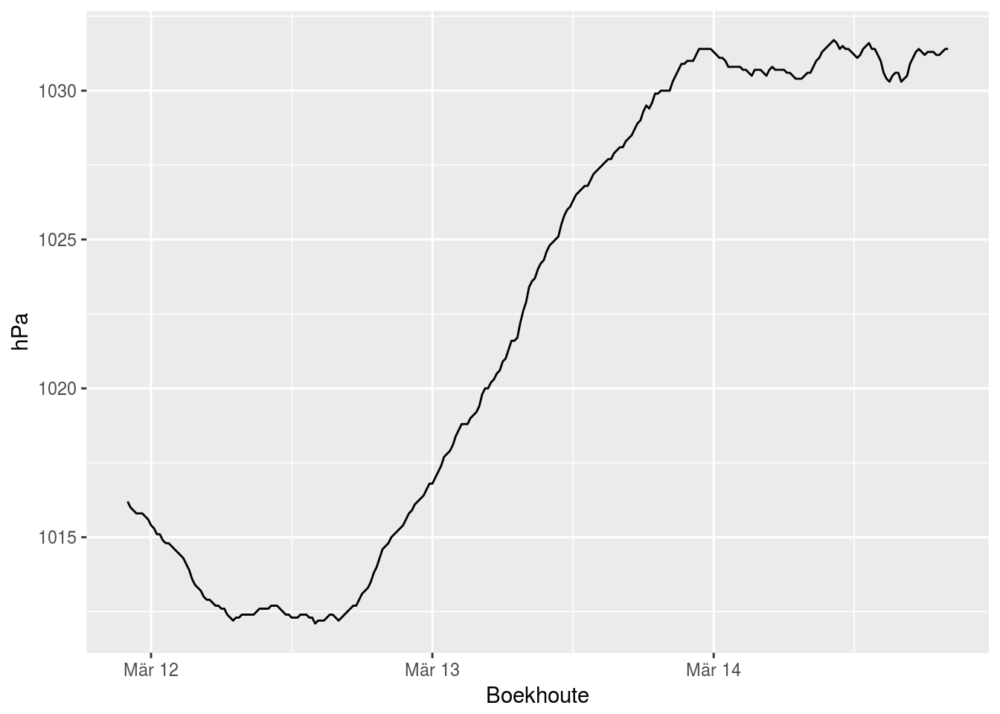
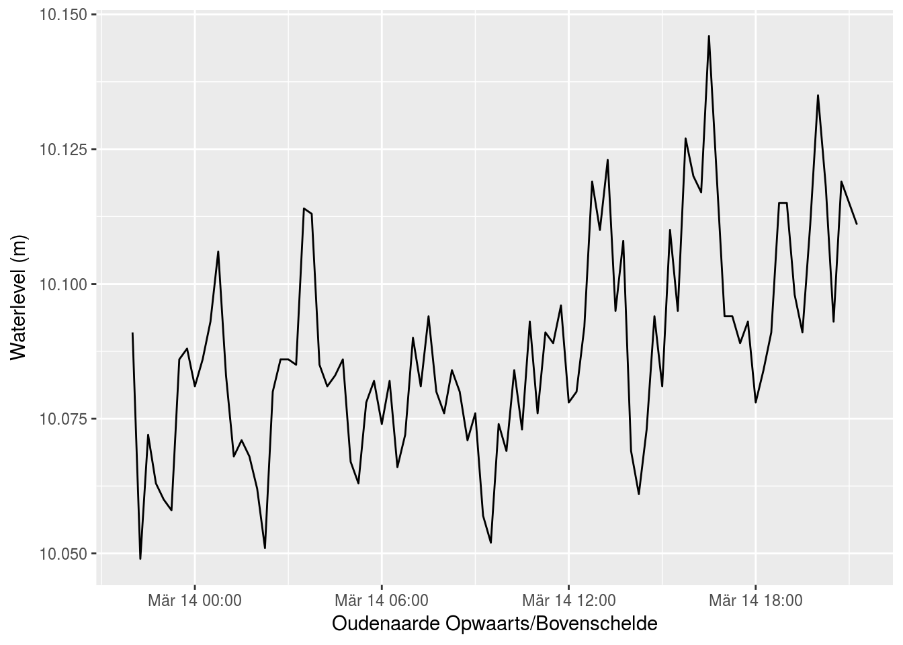

Using a webservice to download data is mainly a matter of providing the appropriate URL (address to a webpage). As an example, copy the following URL in your favorite browser (e.g. firefox, chrome,…) and check the page content:
http://download.waterinfo.be/tsmdownload/KiWIS/KiWIS?datasource=1&type=queryServices&service=kisters&request=getTimeseriesValues×eriesgroup_id=192918&period=P3D&format=htmlIf everything went fine, an HTML page with tabular data appeared. Do the same with the following URL:
http://download.waterinfo.be/tsmdownload/KiWIS/KiWIS?datasource=1&type=queryServices&service=kisters&request=getTimeseriesValues×eriesgroup_id=192918&period=P3D&format=jsonWhich results in the same data, but an alternative representation. The latter is called json and is a popular format to share data amongst web-services.
**Tip:** When working in chrome, it could be worthwhile to install Json Formatter, which provides a clean representation of a json output.
As you wouold notice, the only difference in the URL is the change in format=html into format=json. Hence, by changing the format parameter, we tell waterinfo.be how we want the data to be represented.
Remark: The need for a different URL for both representations (json versus html) is a designer choice of Waterinfo.be. For a more in-depth discussion about this, check the blog post of Ruben Verborgh.
format is not the only parameter we can change. The available options (parameters) can vary from one webservice to another. Other parameters for this specific case are period, datasource, request, timeseriesgroup_id,… As you will notice, the URL to use is structured in two main section:
http://download.waterinfo.be/tsmdownload/KiWIS/KiWIS:the web address the web-service is active. It can be interpreted as the base URL to start from
?parameter1=value1¶meter2=value2&...: the combination of parameters and their chosen value, each time divided by the & character.
Another example of a data request, based on a set of (try in your browser):
http://download.waterinfo.be/tsmdownload/KiWIS/KiWIS?datasource=1&type=queryServices&service=kisters&request=getTimeseriesValues×eriesgroup_id=192918&format=json&period=P3D&returnfields=Timestamp,Value,Quality%20Code&metadata=trueTo do the same in R, packages already do exist that support the handling of a data request from a webservice and to properly handle json data representation:
library('httr')
library('jsonlite')So, instead of our browser, we can use the GET command from the httr package:
r <- GET("http://download.waterinfo.be/tsmdownload/KiWIS/KiWIS?datasource=1&type=queryServices&service=kisters&request=getTimeseriesValues×eriesgroup_id=192918&format=json&period=P3D&returnfields=Timestamp,Value,Quality%20Code&metadata=true")
r## Response [http://download.waterinfo.be/tsmdownload/KiWIS/KiWIS?datasource=1&type=queryServices&service=kisters&request=getTimeseriesValues×eriesgroup_id=192918&format=json&period=P3D&returnfields=Timestamp,Value,Quality%20Code&metadata=true]
## Date: 2017-03-14 20:50
## Status: 200
## Content-Type: application/json;charset=UTF-8
## Size: 92.2 kBThis does NOT result directly into a data.frame or similar representation. However, we already see we got a succesfull request, i.e. Status: 200. An overview of codes is given here. Furthermore, the content is provided as json.
To get the data out of the result is a matter of checking the structure of the returned json (cfr. test the result in your browser) and extract the useful information from the given structure. This will be different for each web-service. Luckily, the httr and jsonlite packages do provide functionalities to convert to something useful in R easier. For example, the fromJSON function tries to convert the json
rdata <- fromJSON(content(r, "text"))
head(rdata[c("station_name", "parametertype_name", "ts_unitname", "ts_unitsymbol", "columns")])## station_name parametertype_name ts_unitname ts_unitsymbol
## 1 Boekhoute_ME Pa hectopascal hPa
## 2 Waregem_ME Pa hectopascal hPa
## 3 Liedekerke_ME Pa hectopascal hPa
## 4 Melsele_ME Pa hectopascal hPa
## 5 Niel-bij-St.-Truiden_ME Pa hectopascal hPa
## 6 Overpelt_ME Pa hectopascal hPa
## columns
## 1 Timestamp,Value,Quality Code
## 2 Timestamp,Value,Quality Code
## 3 Timestamp,Value,Quality Code
## 4 Timestamp,Value,Quality Code
## 5 Timestamp,Value,Quality Code
## 6 Timestamp,Value,Quality CodeWe get a dataframe with information of eight individual stations (name, coordinates, variable type, unit, station). The last column, called data, contains for the given station and variable the corresponding time series. When looking into more detail in one of these data.frame elements, this looks as follows:
rdata$data[[1]][1:10,]## [,1] [,2] [,3]
## [1,] "2017-03-11T22:00:00.000+01:00" "1016.2" "130"
## [2,] "2017-03-11T22:15:00.000+01:00" "1016" "130"
## [3,] "2017-03-11T22:30:00.000+01:00" "1015.9" "130"
## [4,] "2017-03-11T22:45:00.000+01:00" "1015.8" "130"
## [5,] "2017-03-11T23:00:00.000+01:00" "1015.8" "130"
## [6,] "2017-03-11T23:15:00.000+01:00" "1015.8" "130"
## [7,] "2017-03-11T23:30:00.000+01:00" "1015.7" "130"
## [8,] "2017-03-11T23:45:00.000+01:00" "1015.6" "130"
## [9,] "2017-03-12T00:00:00.000+01:00" "1015.4" "130"
## [10,] "2017-03-12T00:15:00.000+01:00" "1015.3" "130"(for convenience, ohly the first ten rows where printed)
This is not yet useful for analysis, as these are all string representations. It would be better to have the data for a specific station and variable as a data.frame as well. Let’s start with the data of the first row, i.e. station Boekhoute. We select that specific data from the parsed data.frame:
boekhoute_pa <- rdata$data[[1]]
boekhoute_pa[1:10,]## [,1] [,2] [,3]
## [1,] "2017-03-11T22:00:00.000+01:00" "1016.2" "130"
## [2,] "2017-03-11T22:15:00.000+01:00" "1016" "130"
## [3,] "2017-03-11T22:30:00.000+01:00" "1015.9" "130"
## [4,] "2017-03-11T22:45:00.000+01:00" "1015.8" "130"
## [5,] "2017-03-11T23:00:00.000+01:00" "1015.8" "130"
## [6,] "2017-03-11T23:15:00.000+01:00" "1015.8" "130"
## [7,] "2017-03-11T23:30:00.000+01:00" "1015.7" "130"
## [8,] "2017-03-11T23:45:00.000+01:00" "1015.6" "130"
## [9,] "2017-03-12T00:00:00.000+01:00" "1015.4" "130"
## [10,] "2017-03-12T00:15:00.000+01:00" "1015.3" "130"Now we can convert this character matrix into a data.frame:
boekhoute_pa_df <- as.data.frame(boekhoute_pa, stringsAsFactors = FALSE)
head(boekhoute_pa_df)## V1 V2 V3
## 1 2017-03-11T22:00:00.000+01:00 1016.2 130
## 2 2017-03-11T22:15:00.000+01:00 1016 130
## 3 2017-03-11T22:30:00.000+01:00 1015.9 130
## 4 2017-03-11T22:45:00.000+01:00 1015.8 130
## 5 2017-03-11T23:00:00.000+01:00 1015.8 130
## 6 2017-03-11T23:15:00.000+01:00 1015.8 130This works, but when checking how R interpreted the individual
str(boekhoute_pa_df)## 'data.frame': 281 obs. of 3 variables:
## $ V1: chr "2017-03-11T22:00:00.000+01:00" "2017-03-11T22:15:00.000+01:00" "2017-03-11T22:30:00.000+01:00" "2017-03-11T22:45:00.000+01:00" ...
## $ V2: chr "1016.2" "1016" "1015.9" "1015.8" ...
## $ V3: chr "130" "130" "130" "130" ...All columns are characters, whereas we want the dates to be interpreted, as well as numeric types for the other columns. Converting the column data types for these types is as follows:
boekhoute_pa_df$V1 <- as.POSIXct(boekhoute_pa_df$V1,
format = "%Y-%m-%dT%H:%M:%S") # DATE
boekhoute_pa_df$V2 <- as.double(as.character(boekhoute_pa_df$V2)) # float
boekhoute_pa_df$V3 <- as.integer(as.character(boekhoute_pa_df$V3)) # integer
str(df)## 'data.frame': 92 obs. of 3 variables:
## $ Timestamp : POSIXct, format: "2017-03-13 22:00:00" "2017-03-13 22:15:00" ...
## $ Value : num 10.1 10 10.1 10.1 10.1 ...
## $ Quality Code: int 200 200 200 200 200 200 200 200 200 200 ...Finally, we would like to have the column names something more useful as the current attributed names:
colnames(boekhoute_pa_df)## [1] "V1" "V2" "V3"Actually, the column names are provided as a column in the rdata as derived from the json response:
rdata$columns[1]## [1] "Timestamp,Value,Quality Code"So, it would be good to use these names as the column names of our time series. Therefore, spliiting the character vector in three values by using the , as a character to split the original vector:
colnames(boekhoute_pa_df) <- stringr::str_split(rdata$columns[1], pattern = ",")[[1]]
head(boekhoute_pa_df)## Timestamp Value Quality Code
## 1 2017-03-11 22:00:00 1016.2 130
## 2 2017-03-11 22:15:00 1016.0 130
## 3 2017-03-11 22:30:00 1015.9 130
## 4 2017-03-11 22:45:00 1015.8 130
## 5 2017-03-11 23:00:00 1015.8 130
## 6 2017-03-11 23:15:00 1015.8 130As a result, we have our time series of pressure values measured in Boekhoute together with a quality code. For the reference, the VMM Quality Code Interpretation is as follows:
| Code | Quality |
|---|---|
| 10/110 | Excellent |
| 30/100/130 | Good |
| 50/150 | Moderate |
| 70/170 | Poor |
| 80/180 | Estimated |
| 90/190 | Suspect |
| 220 | Default |
| -1 | Missing |
We can now work with the data as usual, e.g. plot the time series:
ggplot(data = boekhoute_pa_df, aes(x = Timestamp, y = Value)) +
geom_line() +
ylab("hPa") +
xlab("Boekhoute")
The first time we have to find out how to retrieve the data from the json response takes a while and requires a number of steps (run GET, parse json, convert to data.frame, assign column names and convert data types). However, we do not want to recode all of this when we need the same kind of data ever again. Therefore, we will summarize some of the typical data requests as R functions. These functions can be re-used and will speed up the data request considerably the next time.
Hence, downloading data is a matter of putting together the appropriate URL with the adequate parameters:
station <- "023072043" # != timeseriesgroup_id
format <- "json"
period <- "P1D"
returnfields <- c("Timestamp", "Value", "Quality Code")
metadata <- "true"
r <- GET("http://download.waterinfo.be/tsmdownload/KiWIS/KiWIS",
query = list(datasource = 0, type = "queryServices",
service = "kisters", request = "getTimeseriesValues",
ts_id = station, format = format,
period = period, metadata = metadata,
returnfields = as.character(paste(returnfields,
collapse = ","))))
r## Response [http://download.waterinfo.be/tsmdownload/KiWIS/KiWIS?datasource=0&type=queryServices&service=kisters&request=getTimeseriesValues&ts_id=023072043&format=json&period=P1D&metadata=true&returnfields=Timestamp%2CValue%2CQuality%20Code]
## Date: 2017-03-14 20:50
## Status: 200
## Content-Type: application/json;charset=UTF-8
## Size: 4.59 kBRemark: Here we do not use the timeseriesgroup_id (a kind of variable), but a station id, more specifically from Oudenaarde Opwaarts/Bovenschelde as well as another datasource.
Retrieving the data itself, is a matter of interpreting the data into an object (mostly data.frame) that makes sense in R. For this specific case (howver similar to above:
sdata <- fromJSON(content(r, "text"))
df <- as.data.frame(sdata$data)
df$X1 <- as.POSIXct(df$X1, format = "%Y-%m-%dT%H:%M:%S")
df$X2 <- as.double(as.character(df$X2))
df$X3 <- as.integer(as.character(df$X3))
colnames(df) <- stringr::str_split(data$columns, pattern = ",")[[1]]
print(sdata$station_name) ## [1] "Oudenaarde Opwaarts/Bovenschelde"print(sdata$parametertype_name)## [1] "h"print(sdata$ts_unitname)## [1] "m"The result can be used to incorporate in any kind of analysis or exported as for example csv.
ggplot(data = df, aes(x = Timestamp, y = Value)) +
geom_line() +
ylab("Waterlevel (m)") +
xlab(sdata$station_name)
TODO
TODO
TODO
TODO: provide conversion from ID to text representation about quality
Remark: More advanced API request handling, the curl package provides more advanced functionalities with respect to handling many and or large requests. A in-depth discussion is out of scope here, but the reader is referred to the curl package documentation and the vignette for more information.